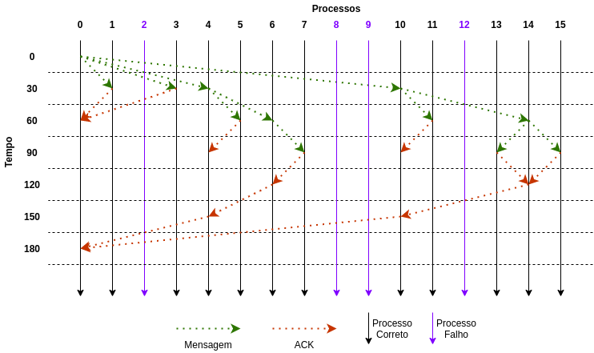

Voltar
Trabalho Prático 3 - Teste 4
Em um sistema com 16 processos, o broadcast é iniciado pelo processo 0 e estão falhos 2, 8, 9 e 12. Mostre
claramente quais mensagens são transmitidas.
O programa foi executado com os seguintes parâmetros:
{% highlight bash %}
./bebcast 0 16 2:1,8:1,9:1,12:1
{% endhighlight %}
A evolução do broadcast ao longo do tempo pode ser visualizado abaixo:

O log deste teste pode ser visualizado abaixo:
› Log do teste 4 (clique para expandir)
{% highlight plaintext %}
Este programa foi executado para N=16 processos
O tempo maximo de simulacao e de 200
A latencia entre as mensagens e o intervalo de testes e de 30
A origem do broadcast e o processo 0
Os estados inicias de cada processo sao:
State do processo 0: [0, 0, 1, 0, 0, 0, 0, 0, 1, 1, 0, 0, 1, 0, 0, 0]
State do processo 1: [0, 0, 1, 0, 0, 0, 0, 0, 1, 1, 0, 0, 1, 0, 0, 0]
State do processo 2: [-1, -1, 1, -1, -1, -1, -1, -1, -1, -1, -1, -1, -1, -1, -1, -1]
State do processo 3: [0, 0, 1, 0, 0, 0, 0, 0, 1, 1, 0, 0, 1, 0, 0, 0]
State do processo 4: [0, 0, 1, 0, 0, 0, 0, 0, 1, 1, 0, 0, 1, 0, 0, 0]
State do processo 5: [0, 0, 1, 0, 0, 0, 0, 0, 1, 1, 0, 0, 1, 0, 0, 0]
State do processo 6: [0, 0, 1, 0, 0, 0, 0, 0, 1, 1, 0, 0, 1, 0, 0, 0]
State do processo 7: [0, 0, 1, 0, 0, 0, 0, 0, 1, 1, 0, 0, 1, 0, 0, 0]
State do processo 8: [-1, -1, -1, -1, -1, -1, -1, -1, 1, -1, -1, -1, -1, -1, -1, -1]
State do processo 9: [-1, -1, -1, -1, -1, -1, -1, -1, -1, 1, -1, -1, -1, -1, -1, -1]
State do processo 10: [0, 0, 1, 0, 0, 0, 0, 0, 1, 1, 0, 0, 1, 0, 0, 0]
State do processo 11: [0, 0, 1, 0, 0, 0, 0, 0, 1, 1, 0, 0, 1, 0, 0, 0]
State do processo 12: [-1, -1, -1, -1, -1, -1, -1, -1, -1, -1, -1, -1, 1, -1, -1, -1]
State do processo 13: [0, 0, 1, 0, 0, 0, 0, 0, 1, 1, 0, 0, 1, 0, 0, 0]
State do processo 14: [0, 0, 1, 0, 0, 0, 0, 0, 1, 1, 0, 0, 1, 0, 0, 0]
State do processo 15: [0, 0, 1, 0, 0, 0, 0, 0, 1, 1, 0, 0, 1, 0, 0, 0]
******************************************
==========================================
Executando processo 0 no tempo 0 [BEBCAST]
Iniciando broadcast com origem 0
Mensagem entregue pelo processo 0
Mensagem enviada do processo 0 para o processo 1 com cluster 1
Mensagem enviada do processo 0 para o processo 3 com cluster 2
Mensagem enviada do processo 0 para o processo 4 com cluster 3
Mensagem enviada do processo 0 para o processo 10 com cluster 4
==========================================
Executando processo 0 no tempo 30 [TEST]
==========================================
Executando processo 1 no tempo 30 [TEST]
==========================================
Executando processo 2 no tempo 30 [TEST]
==========================================
Executando processo 3 no tempo 30 [TEST]
==========================================
Executando processo 4 no tempo 30 [TEST]
==========================================
Executando processo 5 no tempo 30 [TEST]
==========================================
Executando processo 6 no tempo 30 [TEST]
==========================================
Executando processo 7 no tempo 30 [TEST]
==========================================
Executando processo 8 no tempo 30 [TEST]
==========================================
Executando processo 9 no tempo 30 [TEST]
==========================================
Executando processo 10 no tempo 30 [TEST]
==========================================
Executando processo 11 no tempo 30 [TEST]
==========================================
Executando processo 12 no tempo 30 [TEST]
==========================================
Executando processo 13 no tempo 30 [TEST]
==========================================
Executando processo 14 no tempo 30 [TEST]
==========================================
Executando processo 15 no tempo 30 [TEST]
==========================================
Executando processo 1 no tempo 30 [RECEIVE_MSG]
Mensagem recebida pelo processo 1 do processo 0 com cluster 1
Mensagem entregue pelo processo 1
O processo 1 nao possui ACKs pendentes
ACK enviado do processo 1 para o processo 0
==========================================
Executando processo 3 no tempo 30 [RECEIVE_MSG]
Mensagem recebida pelo processo 3 do processo 0 com cluster 2
Mensagem entregue pelo processo 3
Nao existem processos corretos no cluster 1 do processo 3
O processo 3 nao possui ACKs pendentes
ACK enviado do processo 3 para o processo 0
==========================================
Executando processo 4 no tempo 30 [RECEIVE_MSG]
Mensagem recebida pelo processo 4 do processo 0 com cluster 3
Mensagem entregue pelo processo 4
Mensagem enviada do processo 4 para o processo 6 com cluster 2
Mensagem enviada do processo 4 para o processo 5 com cluster 1
==========================================
Executando processo 10 no tempo 30 [RECEIVE_MSG]
Mensagem recebida pelo processo 10 do processo 0 com cluster 4
Mensagem entregue pelo processo 10
Mensagem enviada do processo 10 para o processo 14 com cluster 3
Nao existem processos corretos no cluster 2 do processo 10
Mensagem enviada do processo 10 para o processo 11 com cluster 1
==========================================
Executando processo 0 no tempo 60 [TEST]
==========================================
Executando processo 1 no tempo 60 [TEST]
==========================================
Executando processo 3 no tempo 60 [TEST]
==========================================
Executando processo 4 no tempo 60 [TEST]
==========================================
Executando processo 5 no tempo 60 [TEST]
==========================================
Executando processo 6 no tempo 60 [TEST]
==========================================
Executando processo 7 no tempo 60 [TEST]
==========================================
Executando processo 10 no tempo 60 [TEST]
==========================================
Executando processo 11 no tempo 60 [TEST]
==========================================
Executando processo 13 no tempo 60 [TEST]
==========================================
Executando processo 14 no tempo 60 [TEST]
==========================================
Executando processo 15 no tempo 60 [TEST]
==========================================
Executando processo 0 no tempo 60 [RECEIVE_ACK]
ACK recebido pelo processo 0 do processo 1
Pending do processo 0: [0, 0, 0, 1, 1, 0, 0, 0, 0, 0, 1, 0, 0, 0, 0, 0]
==========================================
Executando processo 0 no tempo 60 [RECEIVE_ACK]
ACK recebido pelo processo 0 do processo 3
Pending do processo 0: [0, 0, 0, 0, 1, 0, 0, 0, 0, 0, 1, 0, 0, 0, 0, 0]
==========================================
Executando processo 6 no tempo 60 [RECEIVE_MSG]
Mensagem recebida pelo processo 6 do processo 4 com cluster 2
Mensagem entregue pelo processo 6
Mensagem enviada do processo 6 para o processo 7 com cluster 1
==========================================
Executando processo 5 no tempo 60 [RECEIVE_MSG]
Mensagem recebida pelo processo 5 do processo 4 com cluster 1
Mensagem entregue pelo processo 5
O processo 5 nao possui ACKs pendentes
ACK enviado do processo 5 para o processo 4
==========================================
Executando processo 14 no tempo 60 [RECEIVE_MSG]
Mensagem recebida pelo processo 14 do processo 10 com cluster 3
Mensagem entregue pelo processo 14
Mensagem enviada do processo 14 para o processo 13 com cluster 2
Mensagem enviada do processo 14 para o processo 15 com cluster 1
==========================================
Executando processo 11 no tempo 60 [RECEIVE_MSG]
Mensagem recebida pelo processo 11 do processo 10 com cluster 1
Mensagem entregue pelo processo 11
O processo 11 nao possui ACKs pendentes
ACK enviado do processo 11 para o processo 10
==========================================
Executando processo 0 no tempo 90 [TEST]
==========================================
Executando processo 1 no tempo 90 [TEST]
==========================================
Executando processo 3 no tempo 90 [TEST]
==========================================
Executando processo 4 no tempo 90 [TEST]
==========================================
Executando processo 5 no tempo 90 [TEST]
==========================================
Executando processo 6 no tempo 90 [TEST]
==========================================
Executando processo 7 no tempo 90 [TEST]
==========================================
Executando processo 10 no tempo 90 [TEST]
==========================================
Executando processo 11 no tempo 90 [TEST]
==========================================
Executando processo 13 no tempo 90 [TEST]
==========================================
Executando processo 14 no tempo 90 [TEST]
==========================================
Executando processo 15 no tempo 90 [TEST]
==========================================
Executando processo 7 no tempo 90 [RECEIVE_MSG]
Mensagem recebida pelo processo 7 do processo 6 com cluster 1
Mensagem entregue pelo processo 7
O processo 7 nao possui ACKs pendentes
ACK enviado do processo 7 para o processo 6
==========================================
Executando processo 4 no tempo 90 [RECEIVE_ACK]
ACK recebido pelo processo 4 do processo 5
Pending do processo 4: [0, 0, 0, 0, 0, 0, 1, 0, 0, 0, 0, 0, 0, 0, 0, 0]
==========================================
Executando processo 13 no tempo 90 [RECEIVE_MSG]
Mensagem recebida pelo processo 13 do processo 14 com cluster 2
Mensagem entregue pelo processo 13
Nao existem processos corretos no cluster 1 do processo 13
O processo 13 nao possui ACKs pendentes
ACK enviado do processo 13 para o processo 14
==========================================
Executando processo 15 no tempo 90 [RECEIVE_MSG]
Mensagem recebida pelo processo 15 do processo 14 com cluster 1
Mensagem entregue pelo processo 15
O processo 15 nao possui ACKs pendentes
ACK enviado do processo 15 para o processo 14
==========================================
Executando processo 10 no tempo 90 [RECEIVE_ACK]
ACK recebido pelo processo 10 do processo 11
Pending do processo 10: [0, 0, 0, 0, 0, 0, 0, 0, 0, 0, 0, 0, 0, 0, 1, 0]
==========================================
Executando processo 0 no tempo 120 [TEST]
==========================================
Executando processo 1 no tempo 120 [TEST]
==========================================
Executando processo 3 no tempo 120 [TEST]
==========================================
Executando processo 4 no tempo 120 [TEST]
==========================================
Executando processo 5 no tempo 120 [TEST]
==========================================
Executando processo 6 no tempo 120 [TEST]
==========================================
Executando processo 7 no tempo 120 [TEST]
==========================================
Executando processo 10 no tempo 120 [TEST]
==========================================
Executando processo 11 no tempo 120 [TEST]
==========================================
Executando processo 13 no tempo 120 [TEST]
==========================================
Executando processo 14 no tempo 120 [TEST]
==========================================
Executando processo 15 no tempo 120 [TEST]
==========================================
Executando processo 6 no tempo 120 [RECEIVE_ACK]
ACK recebido pelo processo 6 do processo 7
Pending do processo 6: [0, 0, 0, 0, 0, 0, 0, 0, 0, 0, 0, 0, 0, 0, 0, 0]
O processo 6 nao possui ACKs pendentes
ACK enviado do processo 6 para o processo 4
==========================================
Executando processo 14 no tempo 120 [RECEIVE_ACK]
ACK recebido pelo processo 14 do processo 13
Pending do processo 14: [0, 0, 0, 0, 0, 0, 0, 0, 0, 0, 0, 0, 0, 0, 0, 1]
==========================================
Executando processo 14 no tempo 120 [RECEIVE_ACK]
ACK recebido pelo processo 14 do processo 15
Pending do processo 14: [0, 0, 0, 0, 0, 0, 0, 0, 0, 0, 0, 0, 0, 0, 0, 0]
O processo 14 nao possui ACKs pendentes
ACK enviado do processo 14 para o processo 10
==========================================
Executando processo 0 no tempo 150 [TEST]
==========================================
Executando processo 1 no tempo 150 [TEST]
==========================================
Executando processo 3 no tempo 150 [TEST]
==========================================
Executando processo 4 no tempo 150 [TEST]
==========================================
Executando processo 5 no tempo 150 [TEST]
==========================================
Executando processo 6 no tempo 150 [TEST]
==========================================
Executando processo 7 no tempo 150 [TEST]
==========================================
Executando processo 10 no tempo 150 [TEST]
==========================================
Executando processo 11 no tempo 150 [TEST]
==========================================
Executando processo 13 no tempo 150 [TEST]
==========================================
Executando processo 14 no tempo 150 [TEST]
==========================================
Executando processo 15 no tempo 150 [TEST]
==========================================
Executando processo 4 no tempo 150 [RECEIVE_ACK]
ACK recebido pelo processo 4 do processo 6
Pending do processo 4: [0, 0, 0, 0, 0, 0, 0, 0, 0, 0, 0, 0, 0, 0, 0, 0]
O processo 4 nao possui ACKs pendentes
ACK enviado do processo 4 para o processo 0
==========================================
Executando processo 10 no tempo 150 [RECEIVE_ACK]
ACK recebido pelo processo 10 do processo 14
Pending do processo 10: [0, 0, 0, 0, 0, 0, 0, 0, 0, 0, 0, 0, 0, 0, 0, 0]
O processo 10 nao possui ACKs pendentes
ACK enviado do processo 10 para o processo 0
==========================================
Executando processo 0 no tempo 180 [TEST]
==========================================
Executando processo 1 no tempo 180 [TEST]
==========================================
Executando processo 3 no tempo 180 [TEST]
==========================================
Executando processo 4 no tempo 180 [TEST]
==========================================
Executando processo 5 no tempo 180 [TEST]
==========================================
Executando processo 6 no tempo 180 [TEST]
==========================================
Executando processo 7 no tempo 180 [TEST]
==========================================
Executando processo 10 no tempo 180 [TEST]
==========================================
Executando processo 11 no tempo 180 [TEST]
==========================================
Executando processo 13 no tempo 180 [TEST]
==========================================
Executando processo 14 no tempo 180 [TEST]
==========================================
Executando processo 15 no tempo 180 [TEST]
==========================================
Executando processo 0 no tempo 180 [RECEIVE_ACK]
ACK recebido pelo processo 0 do processo 4
Pending do processo 0: [0, 0, 0, 0, 0, 0, 0, 0, 0, 0, 1, 0, 0, 0, 0, 0]
==========================================
Executando processo 0 no tempo 180 [RECEIVE_ACK]
ACK recebido pelo processo 0 do processo 10
Pending do processo 0: [0, 0, 0, 0, 0, 0, 0, 0, 0, 0, 0, 0, 0, 0, 0, 0]
Ultimo ACK recebido! Transmissao completa!
==========================================
Executando processo 0 no tempo 210 [TEST]
******************************************
Simulacao encerrada
==========================================
Eventos durante a simulacao:
Event[1]: FALHA | round 0 | tempo 000.0 | processo 2 | numero de testes de 0 | latencia de -1
Event[2]: FALHA | round 0 | tempo 000.0 | processo 8 | numero de testes de 0 | latencia de -1
Event[3]: FALHA | round 0 | tempo 000.0 | processo 9 | numero de testes de 0 | latencia de -1
Event[4]: FALHA | round 0 | tempo 000.0 | processo 12 | numero de testes de 0 | latencia de -1
==========================================
Programa finalizado com sucesso
Autor: Giovanni Rosa :)
==========================================
{% endhighlight %}